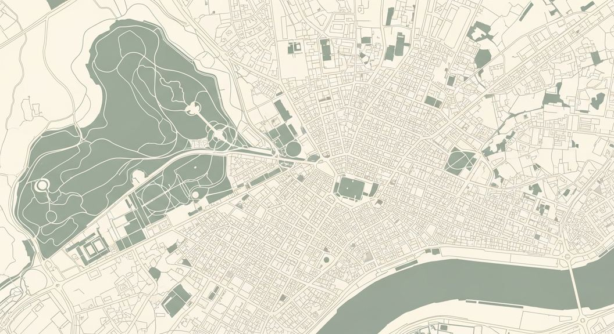

The patient walks in alone.
Leaves alone.
Helf · your better Helf
A patient-owned healthcare companion: an app that sits entirely on the patient's side, and needs nothing from the doctor, the hospital or the system.
- My role
- Product delivery: led product execution from idea to deployment
- Team
- Five students from different countries
- Where
- NOVA IMS, Innovation course
- When
- Pitched April & June 2026
Market figures: Global Market Insights. Trust figure: OECD.
The problem
Patients leave consultations feeling lost. Portugal has one of the lowest trust rates in the OECD, and nearly half of chronic patients say they don't get enough support to manage their own health.
The gap
No one is in the patient's corner. They turn to Google, WhatsApp groups and ChatGPT: tools that were never built for this.
The idea
Put the patient in control. Helf records the appointment, explains it in plain language, and keeps their health record in a cloud they own.
How it works
- BeforeFind & book verified doctorsFiltered by specialty, language and cost
- DuringRecord & transcribeReal-time transcription; the doctor doesn't need to do anything
- AfterUnderstand & actEasy-read summary, medication reminders, one-tap caregiver sharing
- AlwaysYour health cloudEncrypted, patient-owned, never sold
Where it creates value
Vision
Start in Lisbon, where digital health adoption is low and trust is fragile. Then expand across Southern Europe through patient communities and health insurer partnerships.
What we asked for
- →Strategic mentorship
- →Support from NOVA Marketing Lab
- →Academic partnerships to expand
- →Pilot partners and initial funding